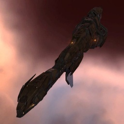

Stabber

Тип корабля: Крейсер
Государство/Организация: Minmatar
Примерная стоимость: 13.200.000 ISK
Описание
Крейсеры типа «Стаббер» составляют каркас матарского флота. Лeгкий и чрезвычайно быстрый, этот корабль на удивление мощен и оснащён разнообразными видами вооружений. Это один из немногих матарских кораблей, снискавших популярность за пределами пространства Республики.
Характеристики
Корпус
Запас прочности корпуса: 1.300 ед.
Вместимость грузового отсека: 420 м^3
Объем отсека для дронов: 25 м^3
Пропускная способность канала телеуправления: 25 Мбит/с
Масса: 11.400.000 кг
Занимает объем: 80.000,0 м^3 (10.000,0 м^3 в разобранном виде)
Влияние инертности конструкции: 0,5x
Сопротивление корпуса ЭМ-урону: 33 %
Сопротивление корпуса термальному урону: 33 %
Сопротивление корпуса кинетическому урону: 33 %
Сопротивление корпуса фугасному урону: 33 %
Броня
Запас прочности брони: 1.300 ед.
Сопротивление брони ЭМ-урону: 60 %
Сопротивление брони термальному урону: 35 %
Сопротивление брони кинетическому урону: 25 %
Сопротивление брони фугасному урону: 10 %
Щит
Запас прочности щита: 1.600 ед.
Влияние на время регенерации щитов: 20 минут и 50 секунд
Сопротивление щита ЭМ-урону: 0 %
Сопротивление щита термальному урону: 20 %
Сопротивление щита кинетическому урону: 40 %
Сопротивление щита фугасному урону: 50 %
Сопротивление средствам РЭП
Сопротивление накопителя нейтрализирующему воздействию: 0 %
Сопротивление воздействию генератору стазис-поля: 0 %
Сопротивление воздействию помех на наводку вооружения: 0 %
Накопитель энергии
Емкость накопителя: 1.200,0 ГДж
Время востановления заряда: 7 минут и 7 секунд
Целеуказания
Максимальная дальность захвата цели: 47,5 км
Максимальное количество захваченных целей: 5
Радиус сигнатуры: 100 м
Разрешающая способность систем захвата цели: 320 мм
Эффективность радарной системы: -
Эффективность магнитнометрической системы: -
Эффективность гравиметрической системы: -
Эффективность ладарной системы: 13 ед.
Двигательная установка
Максимальная скорость: 290 м/с
Скорость в варп-режиме: 4,0 а.е./с.
Служба оснащения
Мощность ЦПУ: 340,0 Тф
Мощность реактора: 715 МВт
Калибровка: 400 ед.
Точки монтажа орудийных установок: 4
Точки монтажа пусковых установок: 2
Разъемы большой мощности: 6
Разъемы средней мощности: 4
Разъемы малой мощности: 4
Разъемы под установку тюнинг-модулей: 3